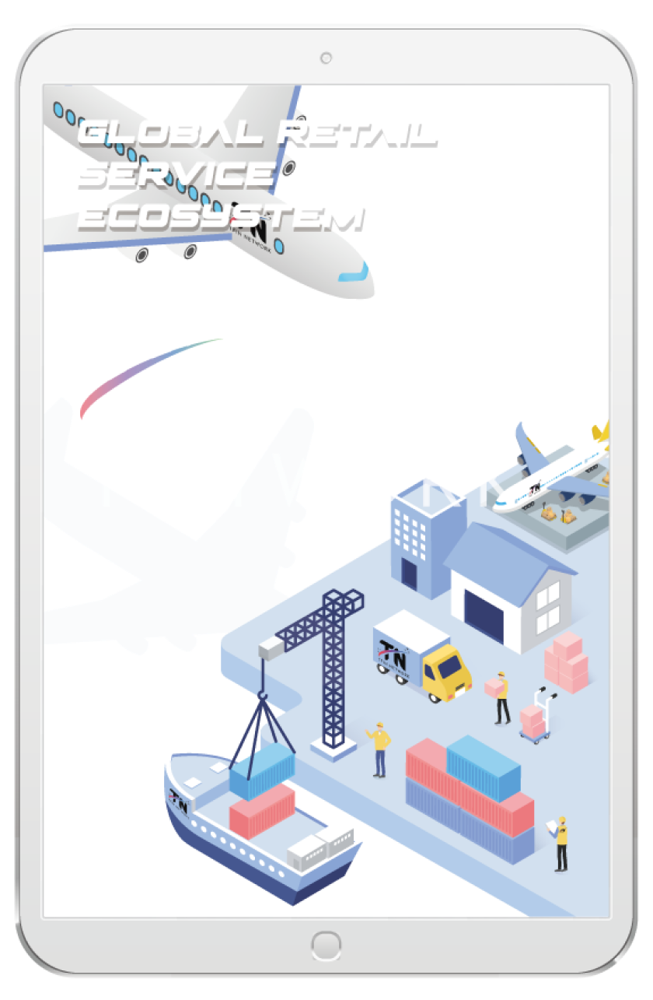
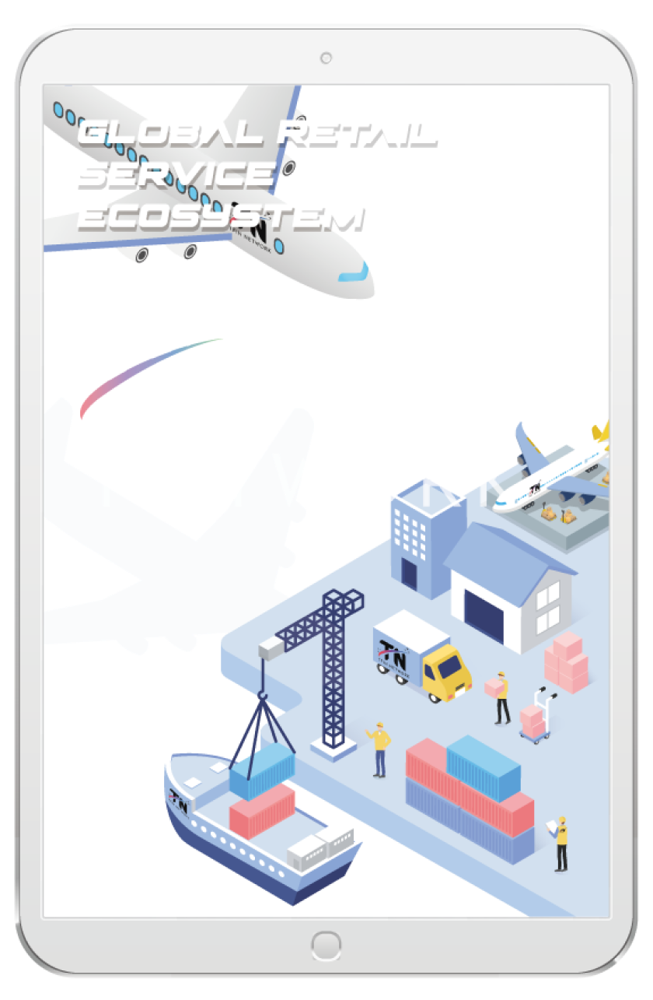

Market
TFIN NETWORK,
which serves as the main currency of the TFIN NETWORK platform,
supports a compensation system that uses TFIN NETWORK
to providers and users who use global distribution services.
A separate smart contract is applied to each unit,
and the whole information is summed up and eventually leads to a reward.

 

Solution
A truly shared economy
that rationally distributes profits to consumers,
sellers and manufacturers alike
Through global distribution partnerships,
years of cross-border e-commerce experience, and Hong Kong's own logistics system,
TFIN Project was able to build an integrated and manageable system
until the moment it was produced and delivered to customers.
Based on this, the TFIN Project creates a truly shared ecosystem
that dramatically reduces unnecessary costs incurred by manufacturers,
distributors, sellers, and consumers, and distributes profits reasonably.